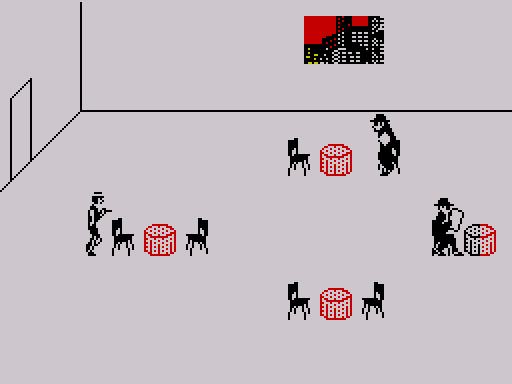

Trivia
- Pick-one messages
- Louey
- Leftover source code
- Constants that aren't
- Random numbers from the program itself
- Self-modifying music
- Jack Benny
- Two loaders
- The shootout is a tiny multitasking system
- The handout is a lottery ticket
- The shootout borrows the ROM
- Number entry: quirks and overflow
- The end-of-year animation is a weighted coin toss
- Which background you get
- Interrupt mode 2 and the 257-byte table
Pick-one messages
Most of Louey's "pick one of these" lines are not stored as a bracketed list inside one message. The message the script says (for example 53164) is only a few bytes long: a random choice (control code 10) between back-references (control code 11), each pointing at a complete message of its own just before it (53008 and 53097). That is why the message at 53164 looks like a single 290-character reply in the listing, when what you actually get is one of the two, 160 or 127 characters long. Of the 118 messages, 27 are reached only this way. Even so, the two hush-money replies are among the longest in the game: they fill speech bubbles of 11 and 10 lines (the bubble routine pairs up lines, so the nine widths in the table at 28728 cover bubbles of up to 18 lines). The longest line of all is the contract warning at 50687, about 200 characters.
Louey
Louey has 118 messages (plus a dozen rating words) and they are among the most heavily compressed text in any Spectrum
game of the time: most words take one or two bytes, and repeated phrases are reused with a back-reference
(control code 11).
Leftover source code
The area at 53353-53792 holds fragments of the game's original assembler source, left there by the assembler in the
memory image that was saved to tape. Readable labels include REGENFL, HITST, HTSTAT, HITOK and COMEBK (and the tail end of another, ending in HAPE3, whose first letter has been overwritten), with
tab-separated mnemonics such as
LD A,(HITST) and AND A. The interrupt jump at 53456 and the
IM2 vector table at 53504 are written over parts of it.
Constants that aren't
The VM has no immediate operands, so every number the script needs is held in a variable. Variables 37-64 are true
constants, but the most frequently used ones (0, 1, 2.5, 10 and 40) are v72, v71, v70, v69 and v68, which are actually
entries of the table of initial values copied into v0-v18 at the start of each game (33937).
Random numbers from the program itself
The random number generator (30026) has no seed in the usual sense. It walks a pointer through memory 256 bytes at a
time (starting at 20480, in the display file), adds and XORs the bytes it finds there, and rejects a result equal to the
previous one. So the "random" numbers depend partly on what is on the screen.
Self-modifying music
Jack Benny
Every silly answer costs a blunder first, and then Louey offers to keep quiet about it (28304). With 19 grand or more in the safe the price is one grand, and one of the two lines he may say is: "If your boys heard about it you wud get more laughs than Jack Benny." With 3 to 18 grand he charges a tenth of what you have, rounded down (so nothing at all below 10 grand), and with less than 3 he cannot help at all and you take a second blunder. So the hush money never removes the blunder itself; it only costs you the money.
Two loaders
The BASIC loaders in the TAP and TZX images differ slightly: the TAP version uses PAPER 1: INK 1 and waits for a
key (PAUSE 0) before starting the game, while the TZX version uses PAPER 0: INK 0 and starts straight away. The
loading screen header says CODE 32768,6912 but the loader loads it at 16384.
The shootout is a tiny multitasking system
The shootout (42112) is not a single game loop. Each moving thing (the two diners who are the bystanders, Mugsy, the hit man and
the two bullets) is a "figure" with a 39-byte record, a timer and a handler. A custom interrupt routine (48539) runs fifty
times a second: for each figure whose timer is 0 it counts down a delay and, when the delay ends, sets the stack
pointer to the figure's record and uses
POP to load HL, DE, BC and IY straight from it, then jumps to IY,
a sprite routine that draws the figure with its registers already set up. When the drawing finishes it marks the
figure as ready; the main loop (42977) notices, and runs the figure's handler, which reads the next byte of its
route script (or the keyboard, for Mugsy) and decides the next move. The diners follow fixed scripts of a couple of
hundred steps (46645, 46825); the hit man picks one of six eight-byte fragments (47034) according to where
Mugsy is, and fires when they are on the same row.

The handout is a lottery ticket
The question "how many grand do you give the boys?" sounds like loyalty money, but the only thing the game does with
the answer is turn it into Mugsy's hit points for the shootout (28358, 42112). Because the conversion keeps only
the low three bits of a fixed-point number, the hit points cycle 5, 6, 7, 8, 1, 2, 3, 4, 5 … as the handout
grows: giving the boys a little more can leave Mugsy as fragile as possible. With nobody pressing a key, a Mugsy with 1
hit point lasts about 14 seconds from the moment the shootout routine starts, one with 4 about 18 and one with 8 about 20 (measured by
running the shootout routine in the Z80 simulator: 719, 921 and 1019 frames at 50 per second).
The shootout borrows the ROM
The restaurant walls are drawn with the Spectrum ROM's pixel-address routine: 46428 calls 8880 ($22B0), the
second half of PIXEL-ADD, skipping its range check, and relies on it to turn a (y, x) pair into a display file address
and bit position.
Number entry: quirks and overflow
The number-entry routine (27790, parsing in 27869) accepts an optional sign followed by digits. A lone "-" or "+" is accepted as zero, leading zeros are harmless, and anything with a decimal point is turned away with a complaint about fractions (and counted as a blunder), so every answer has to be a whole number. "-5" is read as 5 but flagged as negative, which every question in the script refuses.
Numbers typed in answer to a question are held as 32-bit signed counts of hundredths, and the digit-by-digit conversion at 27869 never checks for overflow, so the largest number you can really enter is 21,474,836.47. Typing 21474837 wraps round to a negative number and is treated like any other negative answer. Typing 42949672 comes out as -0.96; typing 42949673 comes out as +0.04 and 42949696 as 23.04, and 4294967296 (ten digits) comes out as exactly zero. In other words, a figure of 43 million or more is silently taken modulo 42,949,672.96. (Measured by typing these numbers into the number-entry routine at 27790 in the Z80 simulator; the answer line has room for only about ten digits, which is still plenty to wrap round.)
The end-of-year animation is a weighted coin toss
At the end of every year the "A year goes by" routine (33994) plays one of two animations: the hoods filing through the Partridge Club, or the getaway car driving past. Nothing in the game chooses between them. It is not the year, the size of the mob, the cash in the safe or anything that happened during the year. The routine makes one call to the random routine (30014, limit 100) and plays the bar room if the result is below 50.
It is not a fair toss. The random routine is not uniform (see the random numbers entry), and for this limit 154 of its 256 raw values give a result below 50 and 102 give 50 or more. So the Partridge Club comes up about 60% of the time and the getaway car about 40%. This comes from reading the routine and counting its raw values, not from playing the game thousands of times, so treat the percentages as approximate.
Which background you get
The backgrounds behind Louey's speech bubbles are random too, in two stages, and neither stage is an even split. At the start of each year the game rolls once (24614): below 50 selects the first table of three pictures, otherwise the second (about 60% and 40%, because of the uneven random routine; see the random numbers entry). Then, every time Louey speaks without asking for a particular placement, the SAY routine (28549) rolls again and takes the first picture in that year's table whose chance value is above the roll. If that is the picture already on screen it rolls again, so the background always changes between lines. Messages that ask for the fixed answer bubble always show the close-up of the hood (64646), and some messages keep whatever is on screen.
| Table (this year) | Picture | Chance of a roll within the table | Overall |
|---|---|---|---|
| First (about 60%) | A figure in a doorway between headlights (58673) | 44.5% | 26.8% |
| First | Two hoods at a table (59397) | 31.2% | 18.8% |
| First | A man in a hat at a table (57583) | 24.2% | 14.6% |
| Second (about 40%) | Hoods and a car in the city (63601) | 46.9% | 18.7% |
| Second | Two figures at the waterfront (61625) | 27.3% | 10.9% |
| Second | The getaway car from above (60526) | 25.8% | 10.3% |
So the waterfront and the getaway car are the rarest backgrounds, each shown only about one line in ten, and a year that uses the second table never shows the two table scenes or the doorway. The percentages come from counting the random routine's 256 raw values (the same method as the animation entry) and ignore the "never the same twice" re-roll, which shifts the odds a little depending on what is on screen. They are not measured from play.
Interrupt mode 2 and the 257-byte table
The Z80 can answer the Spectrum's 50-times-a-second screen interrupt in three ways. In mode 1, the Spectrum's normal mode, it jumps to the ROM, which scans the keyboard and counts frames. In mode 2 (IM 2) the CPU builds an address from the I register (the high byte) and a byte that the hardware puts on the bus (the low byte), reads a 16-bit vector from that address and jumps to it. The Spectrum puts no reliable byte on the bus, so the low byte is effectively random, and programs get round that with a 257-byte table in which every byte is the same.
Mugsy does exactly that. The table at 53504 is filled with 208, so whatever the low byte is, the vector read is 208 × 257 = 53456 ($D0D0), and a
JP sits there (53456). The code that starts an animation or the shootout (33994, 42112) patches the address in that jump to its own interrupt routine (34069 for the animations, 48539 for the shootout), sets I to 209 (the table's high byte, $D1), selects IM 2 and enables interrupts. From then on the routine runs fifty times a second without the main program doing anything: for the animations it counts down a timer and sets a "tick" flag that the animation steps wait for, which keeps the speed steady, and the shootout uses it to run its cooperative scheduler (see the shootout is a tiny multitasking system). When it has finished, the game puts I back to 63 (the ROM's normal value) and returns to mode 1 so the ROM keyboard routines work again.